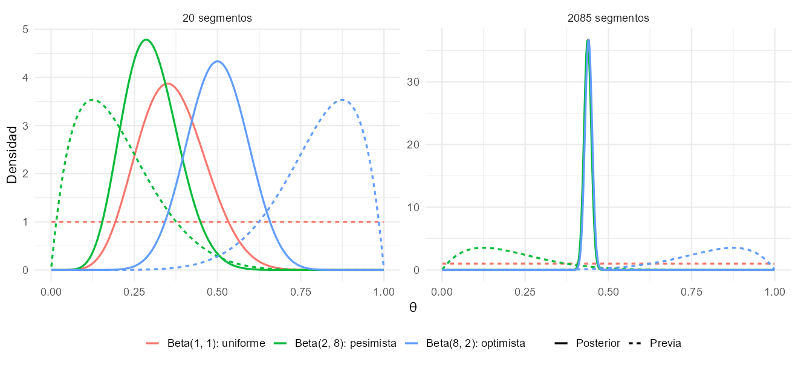
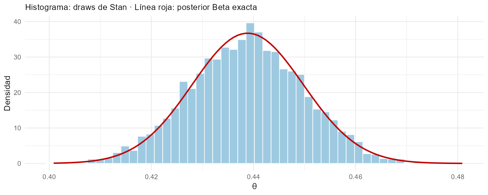
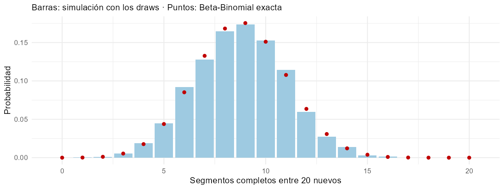
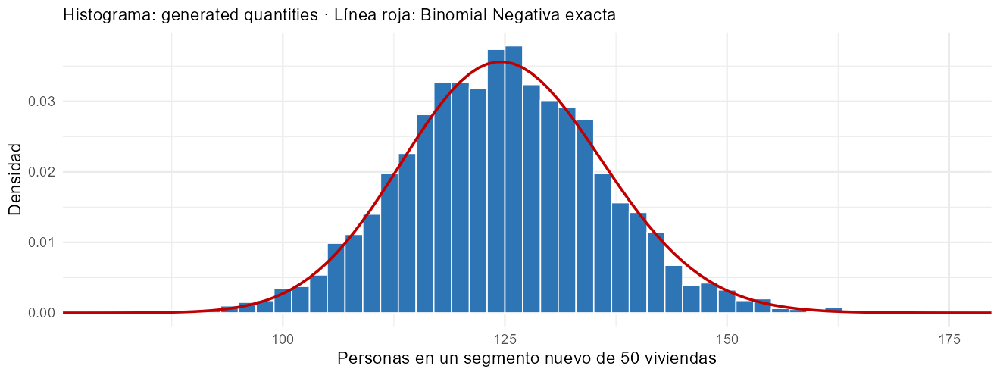
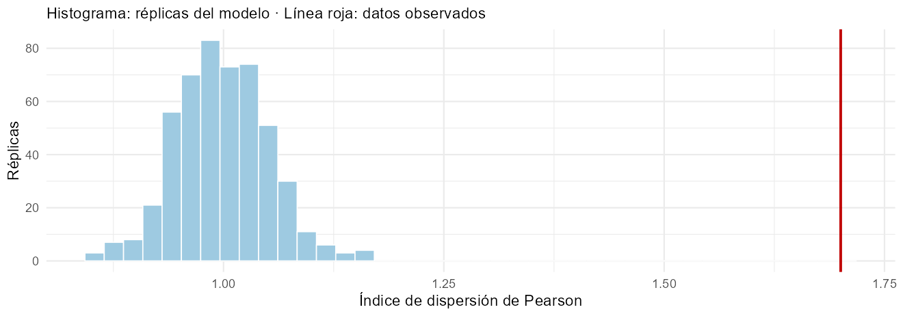
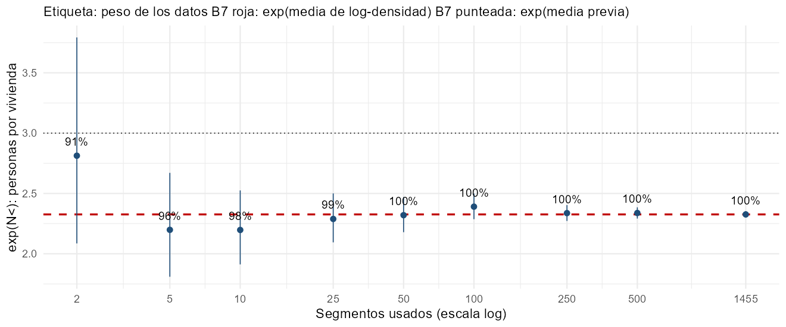

Fundamentos de la inferencia bayesiana I: modelos uniparamétricos
CEPAL · UNFPA América Latina y el Caribe · INE Chile
Invalid Date
Recorrido: proporciones → personas por vivienda → media de logaritmos.
Para inferir sobre un parámetro \(\theta\) se define la distribución conjunta de los datos \(\mathbf{Y} = (Y_1, \dots, Y_n)\) y del parámetro:
\[ p(\theta, \mathbf{Y}) = p(\theta)\, p(\mathbf{Y} \mid \theta). \]
Condicionando en los datos observados:
\[ p(\theta \mid \mathbf{Y}) = \frac{p(\theta, \mathbf{Y})}{p(\mathbf{Y})} = \frac{p(\mathbf{Y} \mid \theta)\,p(\theta)}{\int p(\mathbf{Y} \mid \theta)\,p(\theta)\,d\theta}. \]
El denominador \(p(\mathbf{Y})\) no depende de \(\theta\): es la constante que hace que la posterior integre 1. Por eso se escribe
\[ p(\theta \mid \mathbf{Y}) \;\propto\; p(\mathbf{Y} \mid \theta)\,p(\theta). \]
Estrategia de cálculo: se multiplican verosimilitud y previa, se eliminan los factores que no dependen de \(\theta\) y se busca en la expresión que queda —el núcleo— la forma de una distribución conocida. Si la previa y la posterior son de la misma familia, la previa es conjugada.
| Distribución | Núcleo en \(\theta\) |
|---|---|
| \(\text{Beta}(a, b)\) | \(\theta^{a-1}(1-\theta)^{b-1}\) |
| \(\text{Gamma}(a, b)\) | \(\theta^{a-1}e^{-b\theta}\) |
| \(N(\mu, \tau^2)\) | \(\exp\!\big(-\tfrac{1}{2\tau^2}(\theta-\mu)^2\big)\) |
La posterior es una distribución completa. Para reportar un valor puntual se elige el que minimiza la pérdida esperada posterior:
| Pérdida \(L(\theta, \hat\theta)\) | Estimador de Bayes |
|---|---|
| Cuadrática: \((\theta - \hat\theta)^2\) | Media posterior \(E(\theta \mid \mathbf{Y})\) |
| Absoluta: \(\lvert\theta - \hat\theta\rvert\) | Mediana posterior |
| 0–1, parámetro discreto | Moda posterior (máximo a posteriori) |
Por ejemplo, con pérdida cuadrática,
\[ \frac{d}{d\hat\theta}\,E\big[(\theta - \hat\theta)^2 \mid \mathbf{Y}\big] = -2\big(E(\theta \mid \mathbf{Y}) - \hat\theta\big) = 0 \;\Rightarrow\; \hat\theta = E(\theta \mid \mathbf{Y}). \]
Para un parámetro continuo, la pérdida 0–1 exacta no selecciona la moda: cada punto tiene probabilidad cero. El MAP se interpreta mediante vecindades pequeñas, bajo condiciones de regularidad.
Un intervalo \([a, b]\) con
\[ \Pr(a \le \theta \le b \mid \mathbf{Y}) = \int_a^b p(\theta \mid \mathbf{Y})\,d\theta = 1 - \alpha \]
es un intervalo de credibilidad al \(100(1-\alpha)\%\).
A diferencia del intervalo de confianza, la afirmación es directa: dados los datos, la probabilidad de que \(\theta\) esté en el intervalo es \(1 - \alpha\).
Para un dato nuevo \(\tilde Y\), independiente de \(\mathbf{Y}\) dado \(\theta\):
\[ p(\tilde y \mid \mathbf{Y}) = \int p(\tilde y \mid \theta)\,p(\theta \mid \mathbf{Y})\,d\theta. \]
| zona | Completa | Parcial | Incompleta |
|---|---|---|---|
| aldea | 92 | 69 | 42 |
| rural | 164 | 132 | 205 |
| urbana | 659 | 556 | 166 |
n_per: personas censadas; n_vpo: viviendas particulares ocupadas; delta = n_per / n_vpo.Pregunta didáctica: ¿cómo aprender sobre una probabilidad común \(\theta\) de cobertura completa bajo un modelo Bernoulli?
La proporción de cobertura completa del conjunto observado de Aysén se calcula directamente. La posterior describe incertidumbre sobre el parámetro del modelo para segmentos comparables; no es incertidumbre sobre ese porcentaje ya observado.
Sea \(Y_i = 1\) si el segmento \(i\) tuvo cobertura completa y \(0\) en otro caso, con \(Y_i \mid \theta \sim \text{Bernoulli}(\theta)\):
\[ p(Y_i \mid \theta) = \theta^{Y_i}(1 - \theta)^{1 - Y_i}, \qquad Y_i \in \{0, 1\}. \]
Con \(n\) segmentos independientes y \(s = \sum_i Y_i\) segmentos completos, la verosimilitud es
\[ p(\mathbf{Y} \mid \theta) = \prod_{i=1}^n \theta^{Y_i}(1 - \theta)^{1 - Y_i} = \theta^{s}(1 - \theta)^{n - s}. \]
Solo depende de los datos a través de \(s\): \(s\) es un estadístico suficiente.
\(\theta \in [0, 1]\), así que una previa natural es la Beta:
\[ p(\theta) = \frac{\theta^{a-1}(1-\theta)^{b-1}}{B(a, b)}, \qquad E(\theta) = \frac{a}{a+b}, \qquad \text{Var}(\theta) = \frac{ab}{(a+b)^2(a+b+1)}. \]
\[ \begin{aligned} p(\theta \mid \mathbf{Y}) &\propto p(\mathbf{Y} \mid \theta)\,p(\theta) \\ &\propto \theta^{s}(1 - \theta)^{n - s} \cdot \theta^{a-1}(1-\theta)^{b-1} \\ &= \theta^{(a + s) - 1}(1-\theta)^{(b + n - s) - 1}, \end{aligned} \]
que es el núcleo de una Beta. Por lo tanto
\[ \theta \mid \mathbf{Y} \sim \text{Beta}\big(a + s,\; b + n - s\big). \]
La actualización es aritmética: se suman los éxitos observados a \(a\) y los fracasos observados a \(b\).
\[ E(\theta \mid \mathbf{Y}) = \frac{a + s}{a + b + n} = \underbrace{\frac{a + b}{a + b + n}}_{\text{peso de la previa}}\cdot\frac{a}{a + b} + \underbrace{\frac{n}{a + b + n}}_{\text{peso de los datos}}\cdot\frac{s}{n}. \]
y <- as.integer(segmentos$clasificacion_cobertura == "Completa")
n <- length(y)
a <- 1; b <- 1 # previa uniforme Beta(1, 1)
a_post <- a + sum(y)
b_post <- b + n - sum(y)
bern_analitica <- tibble(
n = n, completos = sum(y),
media_post = a_post / (a_post + b_post),
desv_post = sqrt(a_post * b_post / ((a_post + b_post)^2 * (a_post + b_post + 1))),
ic_025 = qbeta(0.025, a_post, b_post),
ic_975 = qbeta(0.975, a_post, b_post)
)
bern_analitica| n | completos | media_post | desv_post | ic_025 | ic_975 |
|---|---|---|---|---|---|
| 2.085 | 915 | 0,4389 | 0,0109 | 0,4177 | 0,4602 |

Con 20 segmentos las tres previas llevan a posteriores distintas; con 2.085 segmentos las tres posteriores prácticamente coinciden.
| previa | datos | media_posterior | peso_datos |
|---|---|---|---|
| Beta(1, 1): uniforme | 20 segmentos | 0,364 | 0,909 |
| Beta(1, 1): uniforme | todos | 0,439 | 0,999 |
| Beta(2, 8): pesimista | 20 segmentos | 0,300 | 0,667 |
| Beta(2, 8): pesimista | todos | 0,438 | 0,995 |
| Beta(8, 2): optimista | 20 segmentos | 0,500 | 0,667 |
| Beta(8, 2): optimista | todos | 0,441 | 0,995 |
El peso de los datos es \(n / (a + b + n)\): con 20 segmentos y la previa \(\text{Beta}(8, 2)\) es 0,67; con todos los segmentos supera 0,99.
Stan no necesita conjugación: se declaran datos, parámetros y modelo, y Stan obtiene muestras de la posterior con MCMC.
// Modelo Bernoulli-Beta: proporcion theta de segmentos con cobertura completa
data {
int<lower=0> n; // numero de segmentos
array[n] int<lower=0, upper=1> y; // 1 = cobertura completa
real<lower=0> a; // hiperparametros de la previa Beta(a, b)
real<lower=0> b;
}
parameters {
real<lower=0, upper=1> theta;
}
model {
theta ~ beta(a, b); // distribucion previa
y ~ bernoulli(theta); // verosimilitud
}| parametro | media | desv_est | q2.5 | mediana | q97.5 | n_eff | Rhat |
|---|---|---|---|---|---|---|---|
| theta | 0,4387 | 0,0111 | 0,417 | 0,4388 | 0,4602 | 1.451 | 1,0037 |

¿Cuántos de \(m\) segmentos nuevos tendrían cobertura completa? Con \(\tilde K \mid \theta \sim \text{Binomial}(m, \theta)\) y la posterior \(\text{Beta}(a', b')\):
\[ \begin{aligned} p(\tilde k \mid \mathbf{Y}) &= \int_0^1 \binom{m}{\tilde k}\theta^{\tilde k}(1-\theta)^{m - \tilde k}\,\frac{\theta^{a'-1}(1-\theta)^{b'-1}}{B(a', b')}\,d\theta \\ &= \binom{m}{\tilde k}\frac{B(\tilde k + a',\; m - \tilde k + b')}{B(a', b')}, \end{aligned} \]
la distribución Beta-Binomial. Su varianza, \(m\bar\theta(1-\bar\theta)\,\frac{a' + b' + m}{a' + b' + 1}\) con \(\bar\theta = a'/(a'+b')\), es mayor que la de una Binomial con \(\theta\) fijo: incorpora la incertidumbre de \(\theta\).
# Predictiva: numero de segmentos completos entre m = 20 segmentos nuevos.
# Exacta: Beta-Binomial(m, a_post, b_post). Simulada: Binomial(m, theta_s).
m <- 20
dbetabinom <- function(k, m, a, b) exp(lchoose(m, k) + lbeta(k + a, m - k + b) - lbeta(a, b))
predictiva <- tibble(k = 0:m,
exacta = dbetabinom(0:m, m, a_post, b_post),
simulada = as.numeric(table(factor(rbinom(length(theta_draws), m, theta_draws),
levels = 0:m))) / length(theta_draws))
grafico_predictiva <- predictiva %>%
ggplot(aes(k)) +
geom_col(aes(y = simulada), fill = "#9ecae1") +
geom_point(aes(y = exacta), colour = "#c00000", size = 2.5) +
labs(x = "Segmentos completos entre 20 nuevos", y = "Probabilidad",
subtitle = "Barras: simulación con los draws · Puntos: Beta-Binomial exacta")
guardar_figura(grafico_predictiva, "grafico_predictiva_bern", alto = 4.5)
# =============================================================================
# Modelo Poisson-Gamma con exposicion
# =============================================================================
El parámetro de interés es la densidad \(\delta\): personas por vivienda particular ocupada. En los segmentos con cobertura completa,
\[ Y_i \mid \delta \sim \text{Poisson}(\delta\, V_i), \qquad p(Y_i \mid \delta) = \frac{(\delta V_i)^{Y_i} e^{-\delta V_i}}{Y_i!}. \]
\[ p(\mathbf{Y} \mid \delta) = \prod_{i=1}^n \frac{(\delta V_i)^{Y_i} e^{-\delta V_i}}{Y_i!} = \underbrace{\prod_{i=1}^n \frac{V_i^{Y_i}}{Y_i!}}_{\text{no depende de } \delta}\; \delta^{\sum_i Y_i}\, e^{-\delta \sum_i V_i}. \]
Como función de \(\delta\):
\[ p(\mathbf{Y} \mid \delta) \propto \delta^{T_Y} e^{-\delta T_V}, \qquad T_Y = \sum_i Y_i, \quad T_V = \sum_i V_i. \]
Toda la información de los datos sobre \(\delta\) está en el total de personas y el total de viviendas. Derivando el logaritmo, \(T_Y/\delta - T_V = 0\): el estimador de máxima verosimilitud es \(\hat\delta = T_Y / T_V\).
\[ p(\delta) = \frac{b^a}{\Gamma(a)}\,\delta^{a-1}e^{-b\delta}, \qquad E(\delta) = \frac{a}{b}, \qquad \text{Var}(\delta) = \frac{a}{b^2}. \]
rate = b; en Stan, el segundo argumento también es la tasa. La media previa es \(a/b\).\[ p(\delta \mid \mathbf{Y}) \propto \delta^{T_Y} e^{-\delta T_V}\cdot\delta^{a-1}e^{-b\delta} = \delta^{(a + T_Y) - 1}\,e^{-(b + T_V)\delta}, \]
el núcleo de una Gamma:
\[ \delta \mid \mathbf{Y} \sim \text{Gamma}\big(a + T_Y,\; b + T_V\big). \]
Media como promedio ponderado:
\[ E(\delta \mid \mathbf{Y}) = \frac{a + T_Y}{b + T_V} = \frac{b}{b + T_V}\cdot\frac{a}{b} + \frac{T_V}{b + T_V}\cdot\frac{T_Y}{T_V}. \]
Con una previa vaga (\(a, b \to 0\)), la media posterior es \(T_Y/T_V\): el total de personas sobre el total de viviendas. Es la semilla del modelo de población.
completos <- segmentos %>%
filter(clasificacion_cobertura == "Completa", !excluido_colectivo, n_vpo > 0)
a <- 0.01; b <- 0.01 # previa vaga: media 1, varianza 100
a_post <- a + sum(completos$n_per)
b_post <- b + sum(completos$n_vpo)
pg_analitica <- tibble(
segmentos = nrow(completos),
personas = sum(completos$n_per), viviendas = sum(completos$n_vpo),
media_post = a_post / b_post, desv_post = sqrt(a_post) / b_post,
ic_025 = qgamma(0.025, a_post, b_post),
ic_975 = qgamma(0.975, a_post, b_post)
)
pg_analitica| segmentos | personas | viviendas | media_post | desv_post | ic_025 | ic_975 |
|---|---|---|---|---|---|---|
| 694 | 33.068 | 13.224 | 2,5006 | 0,0138 | 2,4737 | 2,5276 |
sensibilidad <- tibble(previa = c("Gamma(0,01; 0,01): vaga", "Gamma(30; 10): media 3",
"Gamma(300; 100): media 3, muy informativa", "Gamma(2; 1): media 2"),
a = c(0.01, 30, 300, 2), b = c(0.01, 10, 100, 1)) %>%
mutate(media_previa = a / b,
media_posterior = (a + sum(completos$n_per)) / (b + sum(completos$n_vpo)),
peso_datos = sum(completos$n_vpo) / (b + sum(completos$n_vpo)))
guardar(select(sensibilidad, -a, -b), "tabla_sensibilidad")| previa | media_previa | media_posterior | peso_datos |
|---|---|---|---|
| Gamma(0,01; 0,01): vaga | 1 | 2,5006 | 1,0000 |
| Gamma(30; 10): media 3 | 3 | 2,5010 | 0,9992 |
| Gamma(300; 100): media 3, muy informativa | 3 | 2,5044 | 0,9925 |
| Gamma(2; 1): media 2 | 2 | 2,5006 | 0,9999 |
Compare las medias posteriores y el peso de los datos en la tabla. La influencia de cada previa depende de su tasa relativa al total de viviendas observadas.
// Modelo Poisson-Gamma con exposicion: personas por vivienda ocupada
data {
int<lower=0> n; // numero de segmentos
array[n] int<lower=0> y; // personas censadas
vector<lower=0>[n] v; // viviendas particulares ocupadas (exposicion)
real<lower=0> a; // previa Gamma(a, b) para delta
real<lower=0> b;
}
parameters {
real<lower=0> delta; // personas por vivienda
}
model {
delta ~ gamma(a, b);
y ~ poisson(delta * v); // E(Y_i) = delta * V_i
}
generated quantities {
// Prediccion para un segmento nuevo de 50 viviendas
int y_nuevo = poisson_rng(delta * 50);
}| parametro | media | desv_est | q2.5 | mediana | q97.5 | n_eff | Rhat |
|---|---|---|---|---|---|---|---|
| delta | 2,501 | 0,013 | 2,475 | 2,501 | 2,527 | 1.178 | 1,001 |
| y_nuevo | 125,159 | 11,177 | 104,000 | 125,000 | 148,000 | 3.905 | 0,999 |
Para un segmento nuevo con \(\tilde V\) viviendas, \(\tilde Y \mid \delta \sim \text{Poisson}(\delta\tilde V)\) y \(\delta \mid \mathbf{Y} \sim \text{Gamma}(a', b')\):
\[ p(\tilde y \mid \mathbf{Y}) = \int_0^\infty \frac{(\delta\tilde V)^{\tilde y}e^{-\delta\tilde V}}{\tilde y!}\,\frac{b'^{a'}}{\Gamma(a')}\delta^{a'-1}e^{-b'\delta}\,d\delta = \frac{\Gamma(a' + \tilde y)}{\tilde y!\,\Gamma(a')}\left(\frac{b'}{b' + \tilde V}\right)^{a'}\left(\frac{\tilde V}{b' + \tilde V}\right)^{\tilde y}, \]
una Binomial Negativa con
\[ E(\tilde Y \mid \mathbf{Y}) = \tilde V\frac{a'}{b'}, \qquad \text{Var}(\tilde Y \mid \mathbf{Y}) = \underbrace{\tilde V\frac{a'}{b'}}_{\text{Poisson}} + \underbrace{\tilde V^2\frac{a'}{b'^2}}_{\text{incertidumbre de } \delta}. \]
La razón entre el segundo término y el primero es \(\tilde V/b'\): la incertidumbre del parámetro es pequeña cuando la exposición nueva es pequeña respecto de \(b'\).
El bloque generated quantities simula \(\tilde Y \sim \text{Poisson}(\delta^{(s)} \times 50)\) en cada draw:
y_nuevo <- as.data.frame(fit_pg)$y_nuevo
# Predictiva exacta: Binomial Negativa con r = a_post y p = b_post / (b_post + 50)
prediccion <- tibble(y = 60:200) %>%
mutate(exacta = dnbinom(y, size = a_post, prob = b_post / (b_post + 50)))
grafico_prediccion <- ggplot() +
geom_histogram(aes(y_nuevo, after_stat(density)), binwidth = 2, fill = "#2e75b6", colour = "white") +
geom_line(aes(y, exacta), data = prediccion, colour = "#c00000", linewidth = 1.1) +
coord_cartesian(xlim = c(80, 175)) +
labs(x = "Personas en un segmento nuevo de 50 viviendas", y = "Densidad",
subtitle = "Histograma: generated quantities · Línea roja: Binomial Negativa exacta")
guardar_figura(grafico_prediccion, "grafico_prediccion", alto = 4.5)
guardar(tibble(cuantil = c("2,5%", "50%", "97,5%"), y_nuevo = quantile(y_nuevo, c(0.025, 0.5, 0.975))),
"cuantiles_y_nuevo")
| cuantil | y_nuevo |
|---|---|
| 2,5% | 104 |
| 50% | 125 |
| 97,5% | 148 |
Los draws de generated quantities reproducen la Binomial Negativa exacta.
Un chequeo predictivo posterior: con cada draw de \(\delta\) se replican los conteos observados, \(Y_i^{rep} \sim \text{Poisson}(\delta V_i)\), y se compara un estadístico \(T\) en los datos y en las réplicas. Aquí, el índice de dispersión de Pearson:
\[ \phi = \frac{1}{n-1}\sum_{i=1}^n \frac{(Y_i - \hat\delta V_i)^2}{\hat\delta V_i}. \]
Si los datos son Poisson, \(E\big[(Y_i - \delta V_i)^2\big] = \delta V_i\) y \(\phi \approx 1\). El valor \(p\) bayesiano es
\[ p_B = \Pr\big(T(\mathbf{Y}^{rep}) \ge T(\mathbf{Y}) \mid \mathbf{Y}\big) \approx \frac{1}{S}\sum_{s=1}^{S} \mathbb{1}\big(T(\mathbf{Y}^{rep,(s)}) \ge T(\mathbf{Y})\big). \]
delta_draws <- as.data.frame(fit_pg)$delta
dispersion <- function(y, mu) sum((y - mu)^2 / mu) / (length(y) - 1)
set.seed(1)
phi_rep <- map_dbl(sample(delta_draws, 500), function(d) {
mu <- d * completos$n_vpo
dispersion(rpois(length(mu), mu), mu)
})
phi_obs <- dispersion(completos$n_per, mean(delta_draws) * completos$n_vpo)
c(observado = phi_obs, replicas_q95 = quantile(phi_rep, 0.95),
p_bayes = mean(phi_rep >= phi_obs))
La dispersión observada es 1,70, mientras que el 95% de las réplicas queda bajo 1,08. La proporción de réplicas que igualan o superan el valor observado se calcula en el script; cero réplicas extremas no demuestra una probabilidad exactamente nula.
d_hat <- mean(delta_draws)
tabla_tamano <- completos %>%
mutate(viviendas = cut(n_vpo, c(0, 10, 30, 60, Inf),
labels = c("1–10", "11–30", "31–60", "más de 60"))) %>%
group_by(viviendas) %>%
summarise(segmentos = n(),
de_observada = sd(n_per / n_vpo),
de_poisson = mean(sqrt(d_hat / n_vpo))) %>%
mutate(razon = de_observada / de_poisson)
tabla_tamano| viviendas | segmentos | de_observada | de_poisson | razon |
|---|---|---|---|---|
| 1<U+2013>10 | 201 | 0,63 | 0,60 | 1,06 |
| 11<U+2013>30 | 392 | 0,49 | 0,38 | 1,30 |
| 31<U+2013>60 | 91 | 0,38 | 0,26 | 1,47 |
| m<U+00E1>s de 60 | 10 | 0,40 | 0,17 | 2,29 |
de_poisson: desviación de \(Y_i/V_i\) que implica el modelo, \(\sqrt{\delta / V_i}\).
Sea \(y_i = \log\delta_i\) el logaritmo de las personas por vivienda en los segmentos aptos. Para ilustrar un modelo de un solo parámetro, fijamos \(\sigma\) en la desviación estándar observada. Es una aproximación didáctica: no propaga la incertidumbre de estimar \(\sigma\). En D1S3 se estudiará el caso de media y varianza desconocidas.
\[ y_i \mid \mu \sim N(\mu, \sigma^2), \qquad \mu \sim N(\mu_0, \tau_0^2). \]
\[ \begin{aligned} p(\mu \mid \mathbf{y}) &\propto \exp\!\Big(-\frac{1}{2\sigma^2}\sum_{i}(y_i - \mu)^2\Big)\exp\!\Big(-\frac{1}{2\tau_0^2}(\mu - \mu_0)^2\Big) \\ &\propto \exp\!\Big(-\frac{1}{2}\Big[\mu^2\Big(\frac{n}{\sigma^2} + \frac{1}{\tau_0^2}\Big) - 2\mu\Big(\frac{n\bar y}{\sigma^2} + \frac{\mu_0}{\tau_0^2}\Big)\Big]\Big) \\ &\propto \exp\!\Big(-\frac{1}{2\tau_n^2}(\mu - \mu_n)^2\Big), \end{aligned} \]
con
\[ \frac{1}{\tau_n^2} = \frac{1}{\tau_0^2} + \frac{n}{\sigma^2}, \qquad \mu_n = \tau_n^2\Big(\frac{\mu_0}{\tau_0^2} + \frac{n\bar y}{\sigma^2}\Big). \]
Por lo tanto \(\mu \mid \mathbf{y} \sim N(\mu_n, \tau_n^2)\).
Con la precisión (inverso de la varianza):
\[ \underbrace{\frac{1}{\tau_n^2}}_{\text{posterior}} = \underbrace{\frac{1}{\tau_0^2}}_{\text{previa}} + \underbrace{\frac{n}{\sigma^2}}_{\text{datos}}, \qquad \mu_n = w\,\bar y + (1 - w)\,\mu_0, \quad w = \frac{n/\sigma^2}{1/\tau_0^2 + n/\sigma^2}. \]
aptos <- segmentos %>% filter(apto_modelo)
y_log <- log(aptos$delta)
sigma <- sd(y_log) # aproximacion didactica: se fija, no es conocida externamente
mu0 <- log(3); tau0 <- 0.5 # previa: alrededor de 3 personas por vivienda
prec_n <- 1 / tau0^2 + length(y_log) / sigma^2
mu_n <- (mu0 / tau0^2 + sum(y_log) / sigma^2) / prec_n
normal_analitica <- tibble(media_post = mu_n, desv_post = sqrt(1 / prec_n),
media_muestral = mean(y_log), n = length(y_log), sigma = sigma)
normal_analitica| media_post | desv_post | media_muestral | n | sigma |
|---|---|---|---|---|
| 0,8443 | 0,0059 | 0,8443 | 1.455 | 0,2265 |
| parametro | media | desv_est | q2.5 | mediana | q97.5 | n_eff | Rhat |
|---|---|---|---|---|---|---|---|
| mu | 0,8444 | 0,006 | 0,8322 | 0,8444 | 0,8558 | 1.386 | 1,0007 |

Las etiquetas muestran el peso de los datos para la \(\sigma\) fijada en este ejemplo. Las submuestras se seleccionan por separado: la figura ilustra distintos tamaños, no una actualización secuencial.
| Modelo | Verosimilitud | Previa conjugada | Posterior | Predictiva |
|---|---|---|---|---|
| Proporción | \(\text{Bernoulli}(\theta)\) | \(\text{Beta}(a, b)\) | \(\text{Beta}(a + s,\ b + n - s)\) | Beta-Binomial |
| Tasa con exposición | \(\text{Poisson}(\delta V_i)\) | \(\text{Gamma}(a, b)\) | \(\text{Gamma}(a + \sum Y,\ b + \sum V)\) | Binomial Negativa |
| Media | \(N(\mu, \sigma^2)\), \(\sigma\) conocida | \(N(\mu_0, \tau_0^2)\) | \(N(\mu_n, \tau_n^2)\) | \(N(\mu_n, \sigma^2 + \tau_n^2)\) |
En los tres casos la media posterior es un promedio ponderado entre la media previa y el estimador de máxima verosimilitud.
En estos ejemplos, compare el peso de la previa con la información de los datos. Un gran número de segmentos no garantiza poca sensibilidad si hay dependencia, problemas de identificación o poca información por parámetro.
Andrés Gutiérrez · Stalyn Guerrero
Contacto: Andrés Gutiérrez
andres.gutierrez@cepal.org